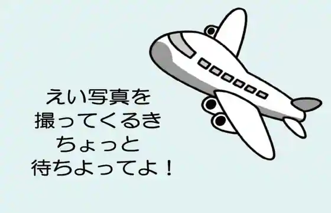
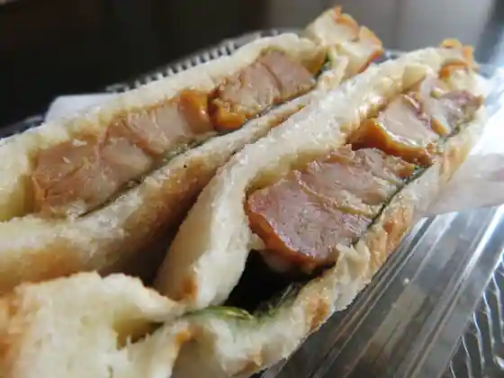
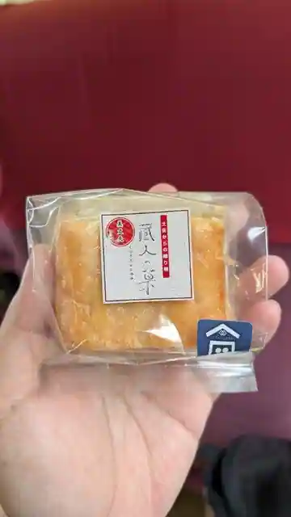
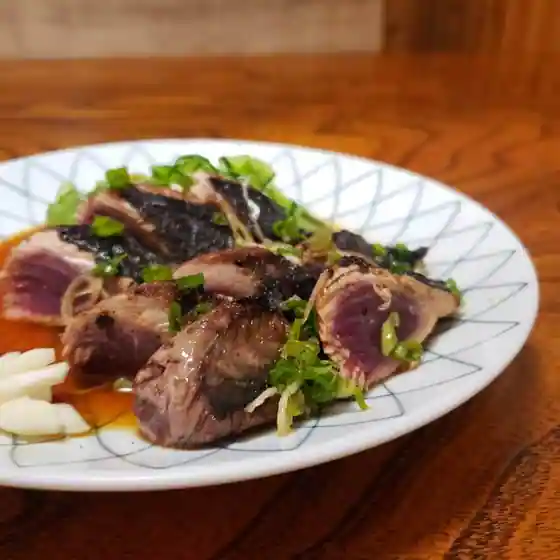
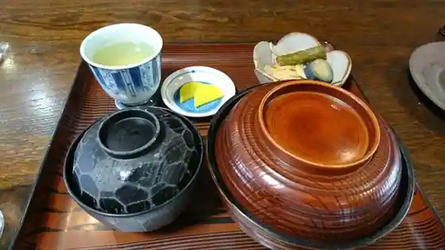
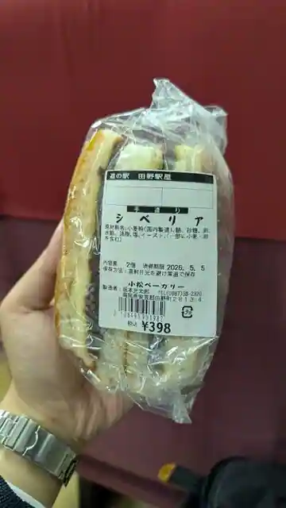
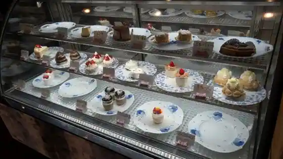

Tano, Kochi: things to do, food and stays
Tano · Kochi
Tano
Highlighted on the Kochi map.


Stay
旅の宿 美園
Tabi No Yado Misono
山郷旅館

Yamago Ryokan
Dining
田野駅屋
Tano Eki Ya
千福

Senpuku
四国部品株式会社中芸食材工房

Shikoku Buhin Kabushikigaisha Chugei Shokuzai Kobo
富士

Fuji
さくら

Sakura
小松ベーカリー

Komatsu Bakery
岡崎菓子 パナシェ

Okazaki Kashi Panashie
Sights
Oka Goten
Tano Eki Ya

Garyo Ume

Daruma Yuhi

Tano Town Hall
Tano Kanzen Tenjitsu Shio Seien Taiken Shisetsu
Yahatayama Kosenkyo
Tateoka Nigo Sando
Gun Bugyo Tokoro Ato
Kyu Oka Ie House
Niju Sanshi no Haka
Kiyoka Michinosuke Kyutei
Hamaguchi Osachi Kyutei